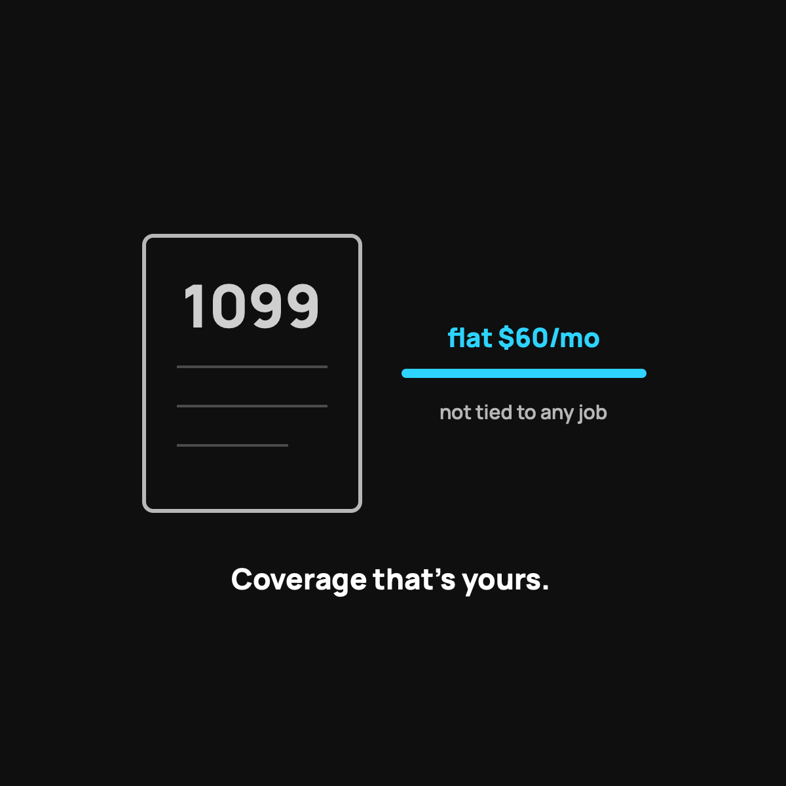

Health Sharing for the Self-Employed
A flat, low cost that isn't tied to any job, and the tax note to factor in.
Health sharing fits the self-employed because it's a flat, predictable cost ($60 per person a month plus a modest crowd contribution with CrowdHealth), it isn't tied to a job, and a care advocate handles the bills you'd otherwise fight alone. One honest catch: sharing contributions generally aren't tax-deductible the way self-employed insurance premiums can be.

If you work for yourself, healthcare is one of the biggest, most annoying line items you deal with, and nobody hands you a group plan to make it easy. I've been there. When you're a 1099 worker, a freelancer, or running your own small shop, you feel the full price of coverage in a way employees never do. That's exactly why so many self-employed folks end up looking hard at health sharing. Let me walk through why it fits, and where to be careful.
The self-employed math problem
When you have a normal job, your employer quietly pays a big chunk of your health insurance. You only see your slice. The day you go out on your own, that hidden subsidy disappears and you're staring at the whole bill. For a family, an individual market plan can run well over a thousand dollars a month, with a deductible waiting behind it.
That's a brutal number to cover out of your own revenue. So the search for something saner is completely rational, not reckless.
Why health sharing fits the 1099 life
A few reasons it lines up well with working for yourself:
- A flat, predictable cost. With CrowdHealth, the service I use, it's $60 per person per month plus a modest crowd contribution. When your income is lumpy, a flat, low base cost is a gift.
- It's not tied to a job. It's yours. It moves with you through good months and slow months, new clients and dropped ones.
- You're already the type it's built for. Self-employed people are usually comfortable managing a bit of risk to keep costs sane. That's the health sharing mindset exactly.
- A human handles the bills. When you don't have an HR department, having a care advocate negotiate your bills down is worth a lot. I wrote about what care advocates do.
The tax angle, plainly
One quick, honest note. Traditional self-employed health insurance premiums can sometimes be deducted on your taxes. Health sharing contributions generally are not treated the same way. That doesn't make it a bad deal, the monthly cost is usually low enough to still come out ahead, but you should factor it in and ask your tax person about your specific situation. I'm not a tax advisor, and this is the kind of thing worth a real conversation with one.
Where to be careful
Same honest limits as always. It is not insurance, there's no legal guarantee, and there are real exclusions and pre-existing rules. If you have an ongoing condition or need guaranteed coverage, weigh that seriously. Here is my who-should-skip-this list.
The takeaway
For a healthy self-employed person or family, health sharing solves the exact pain the 1099 life creates: a high, unpredictable healthcare cost that isn't tied to any employer. A flat monthly number, real human help with bills, and coverage that's truly yours. Mind the tax difference, know the limits, and it can be one of the smartest moves you make working for yourself.
Questions I get about this
Why is health insurance so expensive when you're self-employed?
Because the hidden employer subsidy disappears. At a normal job your employer quietly pays a big chunk of the premium and you only see your slice. Out on your own, you're staring at the whole bill, often well over a thousand dollars a month for a family, with a deductible behind it.
Are health sharing payments tax-deductible for the self-employed?
Generally not treated the same way as self-employed health insurance premiums, which can sometimes be deducted. The monthly cost is usually low enough to still come out ahead, but factor it in and ask your tax person. I'm not a tax advisor.
Does health sharing work for freelancers and 1099 workers?
Yes. It isn't tied to any employer, so it moves with you through good months and slow months. And self-employed people are usually already comfortable managing a bit of risk to keep costs sane, which is the health sharing mindset exactly.
Want to see your own number? Use my code NORMAL: check CrowdHealth (opens in a new tab). New members get their first 3 months at $99 a month with code NORMAL.
My family of four uses CrowdHealth and I really believe in the model. If you join through my discount link (opens in a new tab) (code NORMAL), you get your first 3 months at $99 a month, and Normaltown USA earns a referral bonus if you stick around. It costs you nothing extra, and I only refer you to things I would tell a friend about. Health sharing is not insurance, and nothing here is medical, tax, or financial advice.

Written by David Dewese
Normal guy with a full-time job, wife, and kids. Spent twenty years pursuing music and creative ventures before starting a family. Sharing tips and tricks on how to thrive while living on an artist's income. Not a financial advisor. More about me.
New here?
Normaltown USA is plain-English money and healthcare help for normal people, written by a regular guy with a family of four. No jargon, no hype. Start here, or read the FAQ.